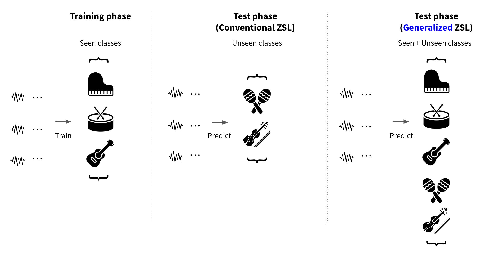

Zero-shot learning task formulation
Contents
Zero-shot learning task formulation#
Now, we’ll go over more detailed formulation of zero-shot learning. Basic task formulation of zero-shot learning frames work is as follows.
Problem definition#
Given a dataset of input feature vectors \(\mathcal{X}\) and their associated labels \(\mathcal{Y}\), we first split the class labels into seen and unseen groups (\(\mathcal{Y}^{seen}\), \(\mathcal{Y}^{unseen}\)). The resulted ‘seen’ split is composed of \(\mathcal{S}^{seen}\equiv\{\left(x_n, y_n\right)\}_{n=1}^{N}\), where an input \(x_n\) is a feature vector on a \(D\)-dimensional space \(\mathcal{X}\) (\(x_n \in \mathcal{X} \stackrel{\text{def}}{=}\mathbb{R}^D\)) and \(y_n\) is one of \(C_0\) label classes ( \(y_n \in \mathcal{Y}^{seen} \equiv\left\{1, \ldots, C_0\right\}\)).
The other set is denoted as the unseen split \(\mathcal{S}^{unseen} \equiv\left\{\left(x_n^{\prime}, y_n^{\prime}\right)\right\}_{n=1}^{N^{\prime}}\), where \(\mathbf{x}_n^{\prime}\) is also a vector from the feature space \(\mathcal{X}\) (\(x_n^{\prime} \in \mathcal{X}\)), while \(y_n^{\prime}\) is from the other set of classes (\(y_n^{\prime} \in \mathcal{Y}^{unseen} \equiv\) \(\left\{C_0+1, \ldots, C_0+C_1\right\}\)). Note that \(\mathcal{Y}^{seen} \cap \mathcal{Y}^{unseen}=\varnothing\).
To simulate a zero-shot condition where the model is supposed to infer an input to a novel class, only a subset of input and ‘seen’ label pairs (\(\mathcal{S}^{seen}\)) are used in training. At test time, the other subset of the input and ‘unseen’ label pairs (\(\mathcal{S}^{unseen}\)) are used for evaluation.
Another main ingredient for the zero-shot model is the side information, which is often given as an additional representational space of the label classes, \(\{\phi(y) ; y \in \mathcal{Y}^{seen} \cup \mathcal{Y}^{unseen}\}\), where \(\phi(y) \in \Phi \equiv \mathbb{R}^{D^{\prime}}\).
The goal of zero-shot learning is to learn a classfier \(f: \mathcal{X} \rightarrow \mathcal{Y}\) that is well-generalized to \(\mathcal{Y}^{unseen}\) even without seeing any training instances for \(\mathcal{Y}^{unseen}\) (\(\mathcal{Y}^{seen} \subset \mathcal{Y}, \mathcal{Y}^{unseen} \subset \mathcal{Y}\)),.
To summarize, given \(\mathcal{S^{seen}}=\left\{\left(x_n, y_n\right), n=1 \ldots N\right\}\), with \(x_n \in \mathcal{X}^{seen}\) and \(y_n \in \mathcal{Y}^{seen}\), where
\(\mathcal{S}^{seen}\) refers to the set of seen input vectors and their associated classes.
\(\mathcal{Y^{seen}}\) is the set of seen classes.
\(\mathcal{X^{seen}}\) is the set of input vectors that are paired with the seen classes.
\(x_n\) is a \(D\)-dimensional input vector in \(\mathcal{X}\) (\(x_n \in \mathcal{X} \stackrel{\text{def}}{=}\mathbb{R}^D\)).
\(y_n \in \{1,...,C_0\}\) is the class label that corresponds to \(x_n\).
\(N\) is the size of the seen training pairs.
we learn \(f: \mathcal{X} \rightarrow \mathcal{Y}\) by minimizing the regularized loss function :
, where \(L()\) is a loss function and \(\Omega()\) is a regularization term.
This looks quite similar to a classical supervised learning process, however, the model should be able to make predictions for the general class set \(\mathcal{Y}\). At the test phase, the model makes prediction on inputs that are associated with the unseen label set \(\mathcal{Y^{unseen}}\) by calculating the maximum compatibility.
Modeling \(f\)#
Compatibility between the input data and the label data.#
\(f\) is usually modeled by using a certain compatibility function :
\(f(x ; W)=\underset{y \in \mathcal{Y}}{\operatorname{argmax}}F(x, y ; W)\), where \(F(x, y ; W)\) is a compatibility function that measures how compatible the input is with a class label.
Since inputs and labels are represented as vectors \(\theta(x), \phi(y)\) using corresponding embedding functions,
\(\theta\) is a representational embedding function for input features.
\(\phi\) is a representational embedding function for class labels as described abolve.
taking the \(\underset{y \in \mathcal{Y}}{\operatorname{argmax}}\) of compatibility is often acheived by choosing the nearest neighbor vector on the embedding space.
\(F(x, y ; W)\) can be rewritten as \(F^{\prime}(\theta(x), \phi(y) ; W)\).
\(W\) is a learnable matrix (our model).
And when dealing with explicit attribute annotations for each class, \(f\) can also be modeled in a more explicit fashion. Given explicit attribute classes \(a \in A\), where \(A\equiv \{1, \ldots, M\}\), \(f\) can be modeled using the combination of the conditional probabilities of attributes given the input feature.
\(f(x)=\underset{y \in \mathcal{Y}}{\operatorname{argmax}} \prod_{m=1}^M \frac{p\left(a_m^y \mid x\right)}{p\left(a_m^y\right)}\).
\(M\) : number of attributes
\(a_m^y\) is the m-th attribute of class \(y\)
\(p\left(a_m^y \mid x\right)\) is the attribute probability given input \(x\) which is obtained from the attribute classifiers (our estimator).
\(p\left(a_m^y\right)\) is the attribute prior estimated by the empirical mean of attributes over training classes.
e.g. Direct Attribute Projection (DAP) and Indirect Attribute Projection (IAP) [21]

Training objectives for the compatibility function is as follows.
1-1) Maximizing the compatibility.#
e.g. Linear compatibility function (learnable)
\(F(x, y ; W)=\theta(x)^T W \phi(y)\)
\(\theta\) is a representational embedding function for input features.
\(\phi\) is a representational embedding function for class labels as described abolve.
This can also be seen as learning a projection matrix that maximizes the dot product.
or by
1-2) Minimizing a distance loss function.#
Nonlinear mapping function (neural network layer \(W_1\) and \(W_2\)) trained with a loss function
\(\sum_{y \in \mathcal{Y}^{seen}} \sum_{x \in \mathcal{X}_y} \| \phi(y)-W_1 \tanh \left(W_2 \cdot \theta(x)\right) \|^2\)
\(\theta\) is a representational embedding function for input features.
\(\phi\) is a representational embedding function for class labels as described abolve.
Other distance metrics such as cosine distance can also be used.
Synthesizing zero-shot class embeddings given \(\phi(y)\)#
Other than directly modeling the relationship between seen and unseen class embeddings, there is another direction of leveraging generative models, such as GAN. Unlike conventional GAN models that generate audio or images directly, zero-shot related GAN models learn to generate feature embeddings given \(\phi(y)\) (side information) as conditional input.
After the generator and discriminator are trained, for any given unseen class \(y\), unseen class embeddings can be generated by computing \(G(z,\phi(y^{unseen}))\).
Then a synthetic class embedding \(\{(\tilde{x},y^{unseen},c(y^{unseen}))\}\) can be constructed for training of unseen classes (any arbitrary input features \(\tilde{x}\) can be synthesized). The problem now becomes a simple classification task where .
Available data while training#
To simulate a proper zero-shot learning situation, unseen classes should be strictly blinded during training phase. However, depending on the scope of information that the zero-shot model sees during training, there are two broad types of setup. One is inductive zero-shot learning and the other is transductive zero-shot learning. In transductive learning setup, in addition to the seen classes and their labeled data samples, the model takes unlabeled data samples from the unseen classes into account. This alleviates the projection domain shift problem by letting the model catch the distribution of unseen class instances and learn a more discriminative projection.
Inductive zero-shot learning
A common setup is the inductive zero-shot learning. In this approaches, only labeled training samples and auxiliary information of seen classes are available during training.
Transductive zero-shot learning
Labeled training samples, unlabelled test samples, and auxiliary information of all classes are available during training.
{kind=link}
Zero-shot evlauation scheme#
‘Generalized’ zero-shot evaluation setup#
In conventional zero-shot learning setup, the trained model was evaluated on the set of unseen classes and their associated data samples. Under this formulation,conventional zero-shot learning research have verified that the basic concept of zero-shot knowledge transfer actually works.
However, in the real world problem, the practical advantage of zero-shot learning is in its generalizability where the prediction scope can expand to a large number of classes present on the side information space. [22] To strictly verify this cabability, the ‘generalized’ zero-shot evaluation had been proposed. Since zero-shot learning models are prone to overfit on the seen classes, they often perform poorly under the generalized zero-shot learning setup.
Since then, generalized zero-shot evaluation became the standard criterion of zero-shot model performance.
{kind=link}
Different approaches for zero-shot learning#
(1) Case 1 : Learning by pairwise ranking of compatibility#
DeViSE: A Deep Visual-Semantic Embedding Model (Frome et al., 2013) [23]
Maximize the following objective function using pairwise ranking:
Ranking objective to map training inputs close to continuous embedding vectors corresponding to correct labels.
\(\Delta\left(y_n, y\right)=1\) if \(y_n=y\), otherwise 0
Optimized by gradient descent.
(2) Case 2 : Learning by maximizing probability function#
Learning to detect unseen object classes by between-class attribute transfer (Lampert et al., 2009) [21]
CONSE (Norouzi et al., 2014) [24]
Instead of learning the mapping function \(f: \mathcal{X} \rightarrow \mathcal{Y}\) explicitly, learn a classifier from training inputs to seen labels. The probability of an input \(\mathbf{x}\) belonging to a class label \(y \in \mathcal{Y}_{seen}\) can then be estimated, denoted \(p_{seen}(y \mid x)\), where \(\sum_{y=1}^{n} p_{seen}(y \mid x)=1\).
\(f(x, t)\) : \(\mathrm{t}^{th}\) most likely label for input \(x\)
\(f(x, 1) \equiv \underset{y \in \mathcal{Y}_{seen}}{\operatorname{argmax}} p_{seen}(y \mid x)\) : probability of an input \(x\) belonging to a seen class:
Each class label \(y(1 \leq y \leq n)\) is associated with a semantic embedding vector \(\phi(y) \in \Phi \equiv \mathbb{R}^{D^{\prime}}\).
Given a test input, the ConSE simply runs the convolutional classifier and considers the top T predictions of the model. Then, the convex combination of the corresponding \(T\) semantic embedding vectors in the semantic space is computed, which defines a deterministic transformation from the outputs of the Softmax classifier into the embedding space.
Combination of semantic embeddings \((\phi)\) is used to assign an unknown input to an unseen class:
\(Z \): normalization factor given by \(Z=\sum_{i=1}^T p_{seen}(f(x, t) \mid x)\)
\(T\) : hyperparameter of controlling the maximum number of semantic embedding vectors to be considered.
If the classifier is confident in its prediction of a label \(y\) for \(x\), i.e., \(p_{seen}(y \mid x) \approx 1\), then \(f(x) \approx \phi(y)\). If not, predicted semantic embedding is somewhere between \(T\) most likely classes (weighted-sum).
(3) Case 3 : Autoencoder approach#
SAE (Kodirov et al., 2017) [25]
Minimize the reconstruction loss (similar to the linear auto-encoder).
Learns a linear projection from \(\theta(x)\) to \(\phi(y)\), being similar to above approaches.
Reconstruction of the original input embedding is set as the training objective .
(4) Case 4 : Generative approach#
f-CLSWGAN (Xian et al., 2017) [26]
Phase 1. Using seen class and image pairs, train a conditional GAN architecture to synthesize image feature vectors.
Phase 2. Use the generator to synthesize pseudo image feature vectors for unseen classes.
Phase 3. Train a classifier with the synthesized image feature vectors and their associated (unseen) classes